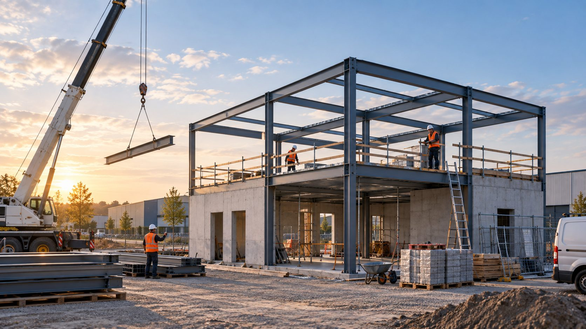
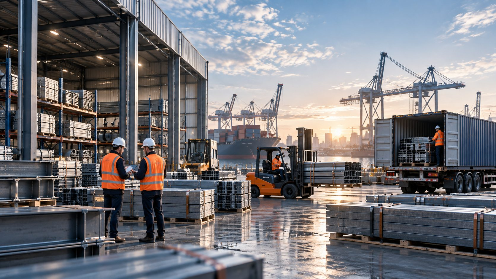

Onze diensten
EuropeStruct is actief in vier disciplines: Nieuwbouw, Utiliteitsbouw, Renovatie & Verbouw en Bouwmanagement & Advies. Hieronder leest u wat elk van deze pijlers inhoudt.

Bouwen vanaf het fundament
EuropeStruct realiseert nieuwbouwprojecten voor particuliere en zakelijke opdrachtgevers: van woningbouw tot bedrijfspanden. Wij begeleiden het traject van eerste schets tot sleutelklare oplevering.
Elk nieuwbouwproject krijgt een aanpak op maat, afgestemd op locatie, programma van eisen en budget — met korte lijnen tussen ontwerp en uitvoering.
- Woningbouw — vrijstaand, twee-onder-een-kap en projectmatig
- Nieuwbouw van bedrijfspanden
- Funderingswerk en ruwbouw
- Afbouw en sleutelklare oplevering

Functionele gebouwen voor elk doel
Onder utiliteitsbouw valt de realisatie van bedrijfshallen, kantoren, scholen en zorg- of sportaccommodaties. EuropeStruct werkt nauw samen met opdrachtgevers, architecten en installateurs om deze gebouwen functioneel en toekomstbestendig neer te zetten.
Van logistieke bedrijfshal tot onderwijs- of zorggebouw: wij vertalen het programma van eisen naar een gebouw dat werkt voor de gebruiker.
- Bedrijfshallen en logistieke gebouwen
- Kantoorgebouwen
- Scholen, zorg- en sportaccommodaties
- Realisatie van fundament tot oplevering
Nieuw leven voor bestaand vastgoed
EuropeStruct renoveert, verbouwt en verduurzaamt bestaande woningen en bedrijfspanden. Wij beoordelen de bestaande constructie zorgvuldig en stemmen de aanpak af op de eisen van vandaag.
Of het nu gaat om een uitbreiding, interne verbouwing of energetische renovatie: wij zorgen dat oud en nieuw werk naadloos op elkaar aansluiten.
- Renovatie van woningen en bedrijfspanden
- Uitbreidingen en aanbouw
- Verduurzaming en energetische renovatie
- Interne verbouwingen en indelingswijzigingen
Overzicht en regie op uw bouwproject
EuropeStruct verzorgt bouwmanagement in de breedste zin: directievoering, planning, kwaliteits- en kostenbewaking. Wij treden op als aansturende partij binnen uw bouwtraject.
Goed bouwmanagement is de ruggengraat van elk succesvol project. Het voorkomt vertragingen, miscommunicatie en kostenoverschrijdingen. Wij bewaken de voortgang zodat u zich kunt focussen op uw eigen zaken.
- Directievoering en projectcoördinatie
- Planning en aansturing van uitvoerende partijen
- Bewaking van scope, budget en planning
- Rapportage en kwaliteitsbewaking